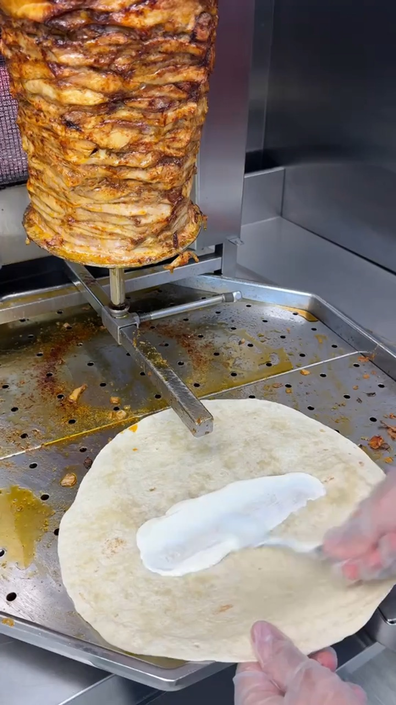
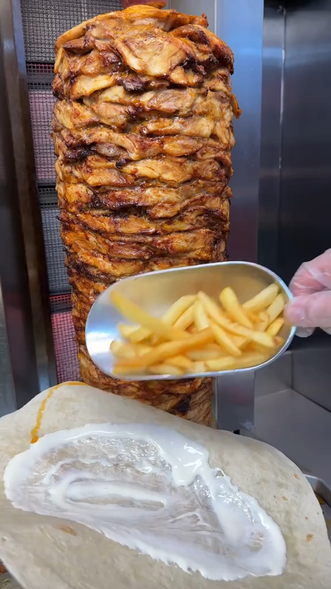
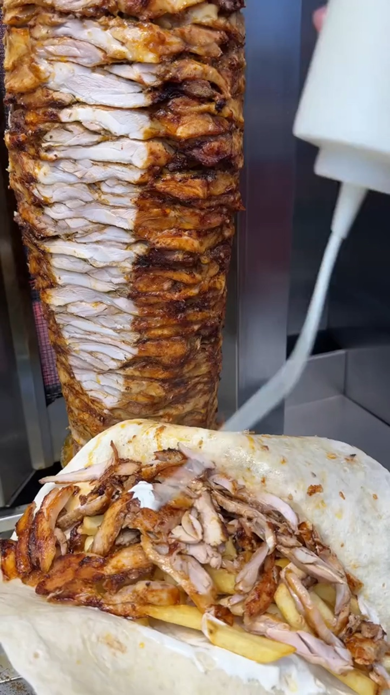
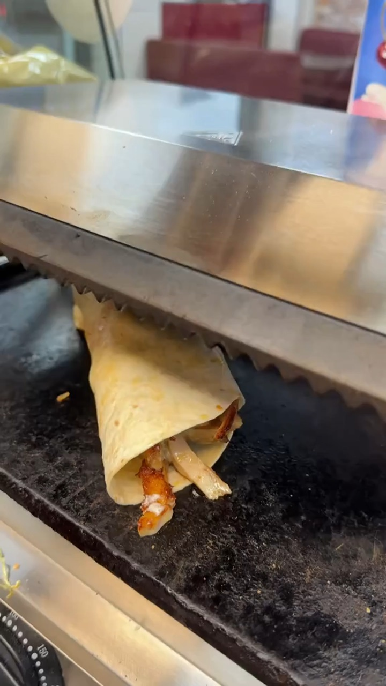
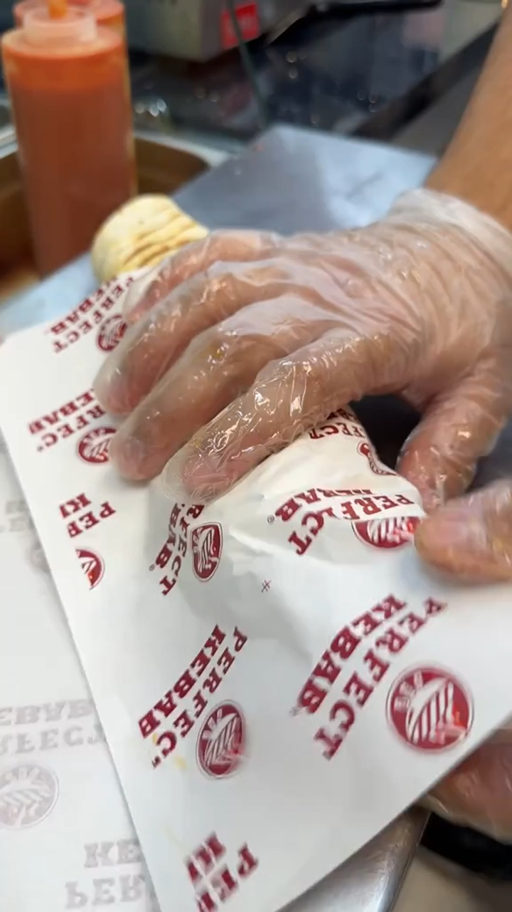
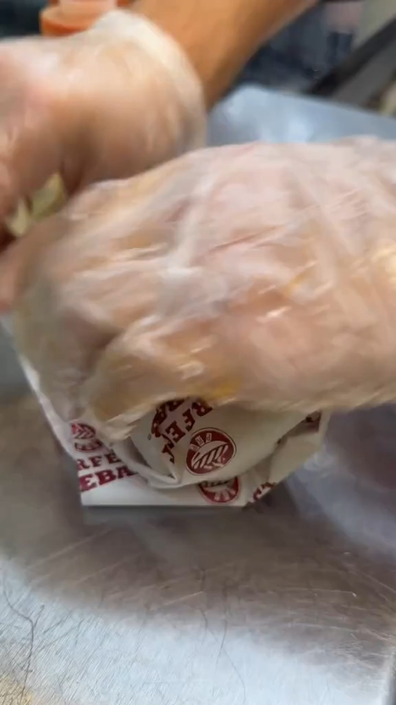
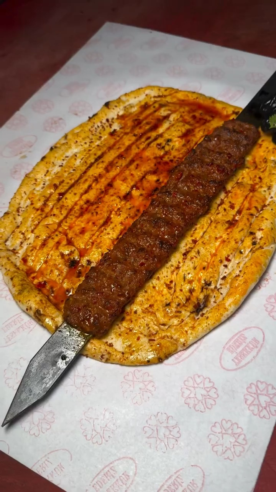
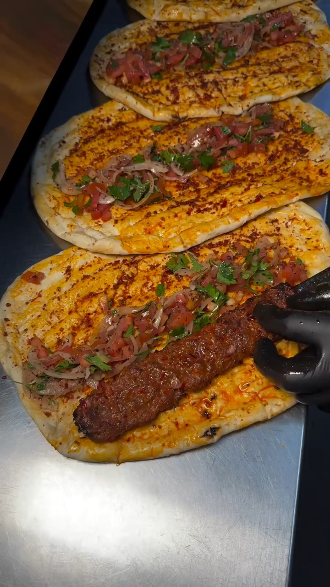

Reels 1 / 2
@perfect.kebab
Döner dürüm yapımı: sos, patates, tavuk, sarma, ızgara, paketleme, son sos.
Örnek videoyu aç ↗
1Lavaşa sos
Ne çekiyoruz
Lavaşın üstüne beyaz sos sürülmesi
Nasıl
Lavaşın ortasına beyaz sos sür.

2Patates ekle
Ne çekiyoruz
Sosun üstüne kızarmış patates konması
Nasıl
Kürekle patatesi lavaşın üstüne boşalt.

3Döner dilimle
Ne çekiyoruz
Döner şişinden tavuk dilimlenip lavaşa düşmesi
Nasıl
Uzun bıçakla şişten dilimle, etler lavaşa düşsün.

4Sos dök
Ne çekiyoruz
Tavuk ve patatesin üstüne beyaz sos
Nasıl
Sos şişesini sıkarak zikzak çizgilerle sos dök.

5Lavaşı sar
Ne çekiyoruz
Eldivenli ellerle dürümün sarılması
Nasıl
Lavaşın kenarlarını kapatıp dürümü sıkıca sar.

6Izgarada kızart
Ne çekiyoruz
Sarılı dürümün ızgarada pişmesi
Nasıl
Dürümü ızgaraya koy, üst plaka kapansın.

7Kağıda sar
Ne çekiyoruz
Dürümün baskılı kağıda paketlenmesi
Nasıl
Dürümü kağıda koy, alttan katlayarak sar.

8Son sos
Ne çekiyoruz
Kağıtlı dürüm ve önünde dönen döner şişi
Nasıl
Dürümü kağıt kılıfta tutup üstüne kaşıkla sos dök.
Reels 2 / 2
@durumgaraj
Siyah eldivenli elle, ekmek üstünde adana kebap servisinin beş kısa çekimi.
Örnek videoyu aç ↗
1Şişten kebap sıyırma
Ne çekiyoruz
Ekmek üstünde soğanlı, domatesli şişteki adana kebap
Nasıl
Eldivenli elle kebabı şişten ekmeğe doğru bastırarak sıyır.

2Garnitürlü kebap tabağı
Ne çekiyoruz
Ekmek üstünde kebap, közlenmiş biber ve soğan salatası
Nasıl
Eldivenli elle kebabı şişten ekmeğe çek, buhar çıksın.

3Tek kebap yakın
Ne çekiyoruz
Ekmeğin üstünde tek adana kebap, şişi çıkarılıyor
Nasıl
Kebap ekmeğin üstünde dursun, şiş yavaşça çekilsin.

4Servis tabağı
Ne çekiyoruz
Oval tabakta kebap, ekmek, közlenmiş domates ve biber
Nasıl
Eldivenli el kebabı tabağa bırakır, bıçağı çeker, buhar yükselir.

5Dizili kebaplı ekmekler
Ne çekiyoruz
Tezgâhta alt alta dizili kebaplı ekmekler
Nasıl
Son ekmeğe kebap konur, yukarıda sıralı ekmekler görünür.
Hazırlanacaklar
- Döner şişini ve tezgahı temizle, ışığı aç
- Lavaş, sos şişeleri ve eldiven hazır olsun
- Telefonu sabitle, lensi sil
- Beyaz kağıdı ve kırmızı zemini ayarla
- Kebabı ve garnitürleri sıcak hazırla
- Siyah eldiven tak
- Lavaş
- Beyaz sos
- Tepsi
- Patates kızartması
- Kürek
- Döner şişi
- Uzun bıçak
- Sos şişesi
- Döner
- Eldiven
- Metal tezgah
- Dolu lavaş
- Dürüm
- Izgara
- Baskılı kağıt
- Kağıt kılıf
- Sos kaşığı
- Şiş
- Lavaş ekmek
- Siyah eldiven
- Beyaz kağıt
- Közlenmiş biber
- Soğan salatası
- Baharatlı lavaş ekmek
- Oval tabak
- Bıçak
- Domates
- Kebaplı ekmekler
- Tezgâh
- Maydanoz